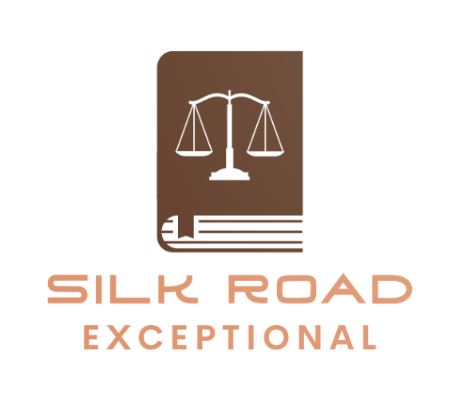

Trust
We earn trust through being honest, impartial, nondiscriminatory, accountable, adherent to laws, and transparent.
Welcome · Da Wrekhamo Laar
A legal and consultancy services company operating under the laws of the Government of Afghanistan, based in Kabul. Not affiliated with governmental or political entities inside or outside Afghanistan.

Welcome
SilkRoad stands for (Da Wrekhamo Laar), which is the Pashtu meaning of Silk Road. It is a legal and consultancy services company operating under the laws of the Government of Afghanistan. Although initially registered in 2011, Silk Road was founded in 2022, based in Kabul, Afghanistan. It is not affiliated with governmental or political entities inside or outside Afghanistan.
The main goals of Silk Road include the following:
Silk Road envisions to be one of the top-ranking professional legal consultancies in Afghanistan by providing affordable, timelier, and standard services, keeping in mind all national and international laws and regulations. Through a group of proficient and experienced lawyers, legal advisors, and a panel of experts, who through their years of pragmatic engagements in the resolution of various cases will prove Silk Road to become exceptional.
Our vision
About
Our goals are to:
What guides us
We earn trust through being honest, impartial, nondiscriminatory, accountable, adherent to laws, and transparent.
We call ourselves professional because we are accurate, innovative, and timely.
Being client-oriented, priority-focused, and demand-driven are the foundations of our standards.
We do strongly believe that “interdependence is a higher value than independence.” – Stephen R. Covey
Services
In addition to delivering quality, the services we provide are very unique in nature, because we work with the most qualified professionals and other expert collaborators in Afghanistan and abroad. The services we deliver are as below:
The specific services include the provision of consultancy in the areas of criminal law, civil law, business law, investment law, commercial law, banking law, tax law, energy law, mining and petroleum law, labor law, family law, sports law, and other legal proceedings and procedures through the intervention of field experts and legal professionals.
The specific services include arbitration, mediation, and negotiation for all sorts of commercial cases in Afghanistan.
We provide a wide range of professional legal services in areas, such as criminal law, civil law, electoral law, business law, investment law, banking law, tax law, labor law, family law, sports law, mine, and petroleum law, etc. The specific services include, but are not limited to the following:
The major services include, but are not limited to the following:
The major services include, but are not limited to the following:
The major services include, but are not limited to the following:
The major services include, but are not limited to the following:
Our Team
Silk Road Law Firm has a team of exceptional and results-driven leaders who love to work with our growing clientele. Our team is eager to learn, open to new ideas and technologies and adaptable to the fast-changing and increasingly complex business environment. Select a profile below to learn more about our exceptional team.
Mr. Mirwais Khpalwak is the CEO of Silk Road Consultancy Services, a leading legal consulting firm in Afghanistan. With over five years of experience in administration, Mr. Khpalwak has established himself as a prominent figure in the Afghan legal industry.
Mr. Khpalwak holds an LLB degree with distinction from a reputable university in Afghanistan, and his academic achievements are a testament to his dedication and commitment to excellence.
He started his career as a Social Mobilizer and has since held various administrative roles, including Admin Assistant and Manager, at different companies. With his vast experience in administration, Mr. Khpalwak has developed a unique understanding of the legal industry, and his expertise has helped Silk Road Consultancy Services grow and thrive.
Mr. Khpalwak has a keen interest in working with the public and a large team. He believes that effective communication and collaboration are the keys to success, and he ensures that his team works together seamlessly to deliver exceptional results for their clients.
Apart from his work, Mr. Khpalwak is also actively involved in philanthropic work and is passionate about giving back to the community. His commitment to making a positive impact is a reflection of his values and his desire to contribute to the betterment of society.
Under Mr. Khpalwak's leadership, Silk Road Consultancy Services continues to expand its services and deliver exceptional results for its clients. He envisions a future where Silk Road Consultancy Services is a leading legal consulting firm in Afghanistan and beyond, and he is committed to making that vision a reality.
Mr. Shamsulhaq Watanwal is a highly respected and experienced legal professional with over ten years of experience practicing law in Afghanistan. He holds a degree in Sharia and Islamic studies from a leading university in Afghanistan, and has since gone on to establish himself as a prominent figure in the Afghan legal community.
Throughout his career, Mr. Watanwal has demonstrated a deep understanding of Islamic law and contemporary legal developments. His experience in criminal law, commercial and mining law, and other contemporary legal procedures has earned him a reputation as one of the top defense lawyers in Afghanistan.
As an active member of the Bar Association of Afghanistan, Mr. Watanwal is a licensed legal practitioner in the country. He is well-versed in the intricacies of the Afghan legal system and is committed to providing his clients with the highest level of legal representation.
Over the course of his career, Mr. Watanwal has represented a wide range of clients, from individuals and small businesses to large corporations and government agencies. He is known for his attention to detail, strategic thinking, and ability to provide effective legal solutions to complex legal issues.
In addition to his work as a defense lawyer, Mr. Watanwal is an active member of the community and is committed to making a positive impact on society. He is involved in several philanthropic initiatives and is passionate about using his legal expertise to help those in need.
Mr. Watanwal has completed several professional certificates in his field, including certificates in criminal law, commercial law, and mining law. He is committed to staying up-to-date with the latest legal developments and regularly attends professional development courses and seminars.
Clients who work with Mr. Watanwal can expect the highest level of professionalism, integrity, and dedication to their case. He is known for his ability to build strong relationships with his clients and for his unwavering commitment to achieving the best possible outcome for them.
If you are in need of legal representation in Afghanistan, Mr. Shamsulhaq Watanwal is an excellent choice for a highly skilled and experienced defense lawyer.
Shereen Khan Habib is a highly accomplished and respected member of the Afghanistan legal community, currently working as a legal advisor and Member of Legal Advisory Board at Silk Road Consultancy Services Company. With a career spanning several years, Mr. Habib is recognized for his expertise in Commercial, Civil, Criminal Law, and Electoral Cases, providing expert advice and representation to Afghan and Multinational Corporate Entities, as well as Individuals. Mr. Habib has a proven track record of success, having represented national and foreign clients in all Afghan courts, including the Afghan Supreme Court.
In addition to his work as a defense lawyer, Mr. Habib has also served as a legal advisor to Parliament Wolsi Jirga (Lower House), working closely with all law-making and judicial institutions of the country, including the Ministry of Justice, Attorney General, Parliament, and Supreme Court. His work in this capacity involved drafting and passing several critical laws, demonstrating his deep understanding of the legal and political affairs of the country.
Mr. Habib is an active member of the Bar Association and the Afghanistan Lawyer’s Association (ALA), which is dedicated to scrutinizing governmental abuse of authority and making legislative policy recommendations to improve rule of law efforts in the country. Additionally, Mr. Habib has competed in the Philip C. Jessup International Law Moot Court Competition and was part of the team that received the best overall applicant in Afghanistan. He has also written several articles and a 180-page research thesis about transitional justice (Extremely need Process), highlighting his passion for legal writing and research.
Mr. Habib holds a Bachelor's degree in Law and Political Sciences and a Master's degree in Public Law. With his extensive experience, deep understanding of Afghanistan's legal and political landscape, and commitment to justice, Mr. Habib is an asset to any legal team.
Mr. Abdul Sattar Saadat is a highly skilled legal and political expert with over 17 years of experience in leadership and advisory positions for national organizations and government bodies. His expertise includes providing legal counsel, designing and implementing national strategies, policy development, staff supervision, and working with the public.
He has a profound understanding of Afghanistan laws, national legal terminologies, and legal and political affairs in the country.
Mr. Saadat is also a human rights activist with a particular interest in rule of law, anti-corruption, election issues, empowerment affairs, and gender mainstreaming. He has appeared in over 500 television and radio interviews, table talks, debates, and public speeches on various legal and political issues. He has also authored several journal articles on diverse topics and has written the first-ever professional books on Electoral crimes in Afghanistan.
Mr. Saadat obtained his LLB (Bachelor Degree) in Law and Political Science and LLM in Criminal law from a top-ranked university with distinction. He is an expert in managing large teams and establishing productive workplaces, with a broad range of soft skills. He is fluent in English, Dari, Pashtu, and Urdu.
After the regime collapsed in August 2021, Mr. Saadat joined a legal company and played a vital role as the Chairperson of the Legal Advisory board at Silk Road (Da Wrekhamo Laar) Consultancy Services Company. He contributed to the development of organizational policies, strategies, and Standard Operating Procedures (SOPs) and managed and supervised the overall operation of the organization with respective departments.
Previously, he served as a Legal Advisor to the President of Afghanistan (Ashraf Ghani), Chairman of Afghanistan Independent Electoral Complaint Commission, Legal Advisor for Afghanistan President Chief of Staff Office, General Director of Afghanistan Lawyer Network, a Legal Advisor for Refugees, Returnees, Nomad’s, Borders and Tribal Affairs Commission and then as General Manager of Agenda at National Assembly of Afghanistan (Lower House), and had a role as a Defense lawyer and legal advisor to different entities at the national and international level.
Mr. Abdul Sattar Saadat is a prominent writer in Afghanistan. He authored the first-ever standard book in Afghanistan about Electoral crimes and published several articles on various topics, including Constitutional Violation, Electoral Crimes, Compliance in crime, The Principle of legality of Crimes and Punishment, The strategic principles of criminal law in legislative documents, Classification of penalties punishment, Objection right on court decision, The Plato and Aristotle thoughts regarding criminal justice, and The criminal policy of Afghanistan and US against Terror crimes.
Mr. Mohammad Sameem Zalmai is member of Legal Board at Silk Road, he is a highly skilled and accomplished senior defense lawyer and legal advisor with extensive experience in commercial law. With a proven track record of success in representing clients in complex and high-stakes legal matters, he has developed a deep understanding of the Afghanistan legal system and has a keen ability to navigate the legal landscape to achieve the best possible outcomes for his clients.
Mr. Zalmai's expertise lies in advising clients on a wide range of commercial legal matters, including contract negotiation, reviewing and drafting legal documents, handling and following up on legal disputes, corporate governance, regulatory compliance, intellectual property, and property and labor law related services. He has represented clients across various industries, including finance, technology, healthcare, and manufacturing, among others.
As a seasoned litigator, he is skilled in all aspects of dispute resolution, from pre-litigation negotiations to trial and appeal. He has successfully defended clients in high-stakes lawsuits, including cases involving breach of contract, fraud, intellectual property disputes, and antitrust claims.
In addition to his legal expertise, he is a trusted advisor to his clients, providing strategic counsel and practical solutions to their most complex legal challenges. He has a reputation for being a creative problem-solver, able to identify and leverage opportunities to achieve favorable outcomes for his clients.
Mr. Zalmai's professional experience has equipped him with a deep understanding of legal issues and a remarkable capacity for logical and reasoned solutions to complex cases. He is a highly skilled advocate, dedicated to providing his clients with the best possible representation and securing the outcomes they deserve.
In addition to his legal expertise, he has received awards and certificates from various national and international institutions and organizations. His legal writings and translations have been published on various websites, and he has even translated a book titled "Legal and Political System of Afghanistan" into Pashto language.
Beyond his work as a defense lawyer, he is deeply committed to community involvement and has participated in numerous civic and charitable activities throughout his career. He has volunteered with Khushal Baba's intellectual process since 2012 and actively participated in the strengthening and implementation of social peace with the Peace Center of Nangarhar University. He has also been the head of the youth club of Nangarhar Youth Peace Center, where he has carried out many social and charitable activities in the eastern provinces of Afghanistan, such as blood donation campaigns, fundraising for snow-affected people, and planting saplings.
Overall, he is a passionate and dedicated legal professional who is committed to providing the highest level of service to his clients. With his expertise in commercial and business laws and his extensive experience in litigation and dispute resolution, he is confident that he can provide effective legal counsel to meet the needs of any client seeking a skilled and experienced defense lawyer and legal advisor.
Mr. Mohammad Homayoon Shahaab is a distinguished member of our Advisory Board with a rich background in the field of law. He holds an LLM degree from Kateb University in International Law (2016) and a bachelor's degree in Law and Political Science from Nangarhar University (2006), with over fifteen years of professional experience working with national and international organizations in Afghanistan, demonstrating his dedication and expertise in the field.
Throughout his career, Mr. Shahaab has gained extensive experience in legislation, legal drafting, policy-making, legal aid, public awareness, capacity development, gender justice, advocacy, humanitarian activities, ethics, project management, case management, contract management, and sports management. He has held key technical roles in Rule of Law projects/programs, serving as a Legal Trainer, Legal Advisor, Project Manager, Team Lead, and Section Lead with reputable organizations such as the Afghanistan Human Rights Organization, Norwegian Refugee Council, PAE, Tetra Tech, and Afghanistan Cricket Board.
Mr. Shahaab has an exceptional understanding of Afghan laws (Civil and Criminal), administrative frameworks, institutions, and government rules and regulations. His commitment to delivering high-quality work is unwavering, and he always strives to achieve the best possible standards for any project assigned to him.
We are honored to have Mr. Shahaab as a member of our Advisory Board and we are confident that his vast knowledge, expertise, and experience will contribute immensely to the success of our Company.
Mr. Ehsanullah Selab is the Public/Government Relations Department Manager at Silk Road Consultancy Services, a leading legal consulting firm in Afghanistan. He is an experienced legal professional with over ten years of work experience in the industry.
Mr. Selab holds an LLB degree from a reputable university in Afghanistan, where he graduated with honors. He is a detail-oriented individual with a deep understanding of the legal industry and government affairs.
Mr. Selab began his career as a Government Relations Officer, where he gained valuable experience working with government officials and building relationships with stakeholders. He then worked as a Para-Legal, where he assisted in the management of legal cases and provided legal support to clients.
Mr. Selab's expertise in government affairs led to his appointment as Procurement Manager at Legal Prestige, where he successfully managed the company's procurement operations and established strong relationships with suppliers and vendors.
As Government Relations Department Manager at Silk Road Consultancy Services, Mr. Selab is responsible for maintaining strong relationships with government officials and ensuring that the company complies with all relevant regulations and laws. He works closely with government agencies and ministries to identify opportunities for collaboration and provides strategic advice to the company's leadership team.
Mr. Selab has completed several professional certificates in management and leadership.
In addition to his work, Mr. Selab is actively involved in philanthropic work and is passionate about giving back to the community. He believes that it is essential to make a positive impact on society and has participated in several community service initiatives.
Under Mr. Selab's leadership, the Public/Government Relations Department at Silk Road Consultancy Services continues to strengthen its relationships with government officials and agencies. His expertise and strategic insights have helped the company navigate the complex legal landscape in Afghanistan, and he is committed to ensuring that Silk Road Consultancy Services remains a trusted advisor to its clients.
Mr. Matiullah Baheer is an accomplished legal professional with a distinguished career in the field of law. He has earned a reputation for his expertise in international law, legal drafting, dispute settlement, policy-making, project management, contract management, public awareness, advocacy, and humanitarian activities. Mr. Baheer has dedicated his career to the pursuit of excellence and has proven his capabilities time and again in a variety of legal settings.
Mr. Baheer's educational background is impressive. He holds an LLM degree from the South Asian University in International Law, a Post-graduate Diploma in International Law & Diplomacy from the Indian Society of International Law, and an LLB degree from the Nangarhar University. He also had the opportunity to join the joint academy of the Center for WTO Studies and WTI at the Indian Institute of Foreign Trades (IIFT). His academic achievements are a testament to his commitment to lifelong learning and his passion for legal scholarship.
Mr. Baheer's expertise in dispute settlement, legal drafting, policy-making, project management, contract management, public awareness, advocacy, and humanitarian activities is evident from his work in various settings. He has been actively involved in some of the most prestigious moot court competitions and has judged and arbitrated several national and international rounds of the Jessup, Willem C. Vis, and FDI Moot Court Competitions. His work in policy-making, project management, contract management, public awareness, advocacy, and humanitarian activities has made a significant impact in the legal community and beyond.
Mr. Baheer has an exceptional understanding of both Afghan and international laws, including the procedures, administrative frameworks, institutions, and government rules and regulations of Afghanistan. His commitment to delivering high-quality work is unwavering, and he always strives to achieve the best possible standards for any project assigned to him. He is a valued member of the Advisory Board, and his vast knowledge and experience in this field will contribute immensely to the success of the firm.
In conclusion, Matiullah Baheer is an exceptional legal professional who has dedicated his career to the pursuit of excellence. His expertise in international law, dispute settlement, legal drafting, policy-making, project management, contract management, public awareness, advocacy, and humanitarian activities has made him a valuable asset to any team. The firm is honored to have Mr. Baheer as a member of the Advisory Board and looks forward to the contribution he will make to the success of the firm.
Choose Silk Road
We call ourselves professional because we are accurate, innovative, and timely. We do strongly believe in
“Winners don’t do different things; they do things differently.”– Shiv Khera
There are many other facts and strengths that make us different from other entities in Afghanistan, and some of them are as below:
Memberships
Kabul, Afghanistan
ABA is an organization serving to defend and organize legal affairs of attorneys in Afghanistan. ABA is headquartered in Kabul with regional offices in each province. It was established under the auspices of the Ministry of Justice.
Bearing ABA’s partnership, Silk Road team enjoys all the rights of the organization. In addition to other existing laws, Silk Road adheres to all the principles and articles of the ABA’s Law.
Testimonials
Worked with Silk Road? We would value your feedback. Comment on our service and help us keep improving.
Contact